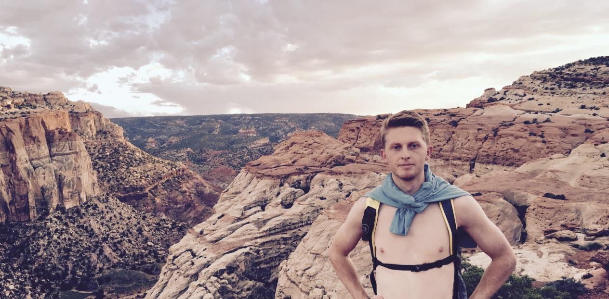
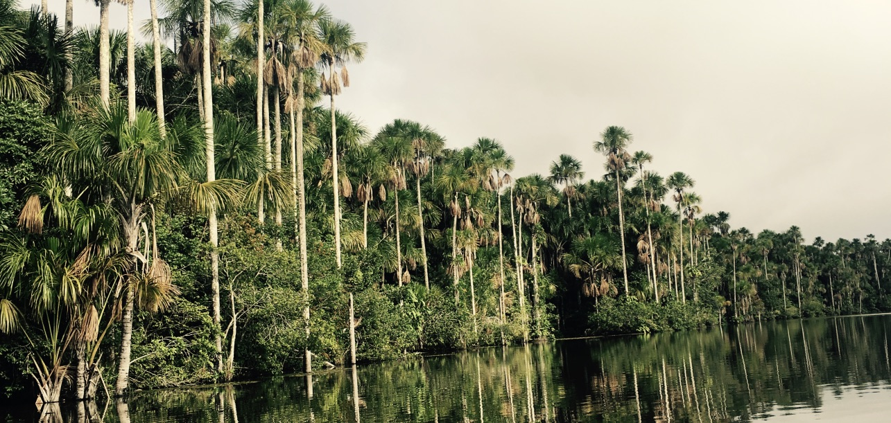
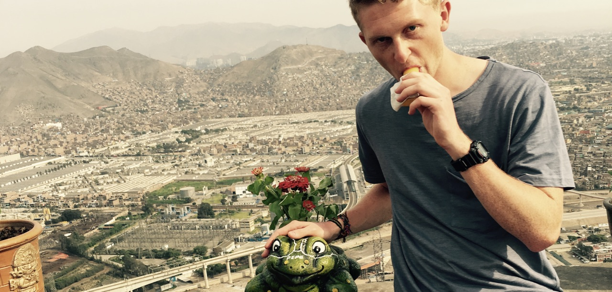
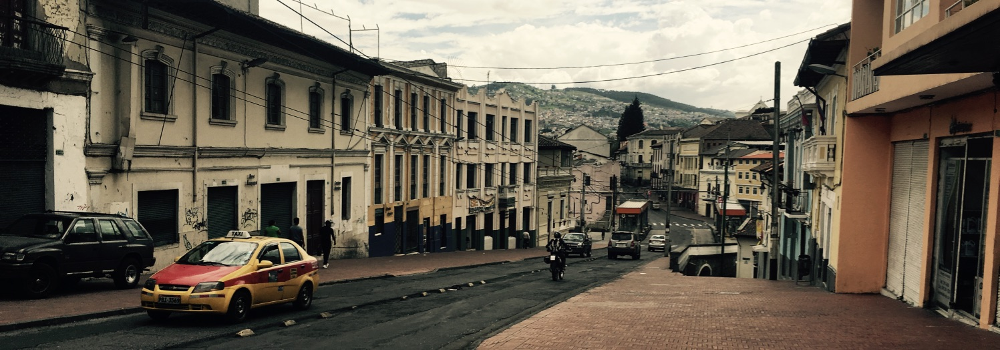
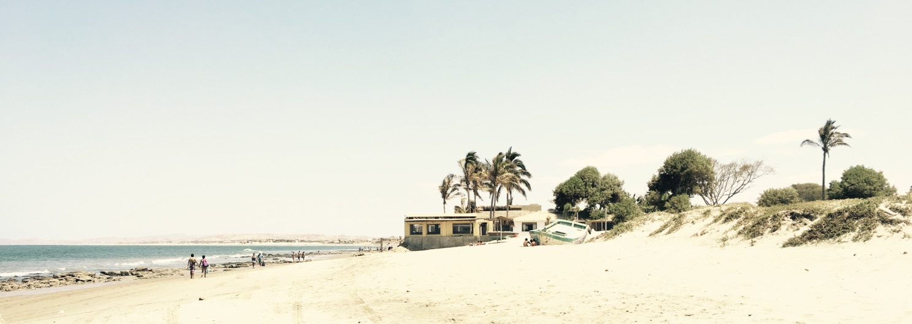

Adam Thompson
Software Developer, World Traveller
I'm a third year undergraduate student at Brigham Young University studying Computer Science. Currently seeking an internship in order to be able to apply my technical abilities in a real world setting while deepening my experience base. Particularly interested in back-end development and working with big data.
Capitol Reef National Park, Utah, USA
I love to travel the world!! I haven't gone everywhere but I've been spending a lot of time lately in North and South America, there's so much to see here and it's been a blast! Hopefully as time goes by I'll be able to go to more and more places
Check out my projects
El Lago Sandoval, Reserva Nacional Tambopata, Madre de Dios, Peru
Some quick resume stats:
Skills
- Languages: C, C++, Java, XML, HTML, CSS, Javascript, jQuery, AngularJS, React Native, Node.js, PHP
- Databases: SQL, MongoDB
- Content Management Systems: Drupal
- Testing Frameworks: JUnit, Jasmine
- Environments: Visual Studio, Eclipse, Android Studio, IntelliJ IDEA
- Operating Systems: Windows, Mac OS, Linux
Experience
Full Stack Developer - BYU McKay School of Education
- Collaborate with 4-6 other developers as part of both the special projects and support teams in order to be able to accomplish larger-scale projects
- Learned how to use Drupal and PHP in order to maintain and update the website of the education department and respond quickly to internal requests to make changes and fix errors
R&D Intern - InfoTrax Systems
- Tested software using an agile methodology, was able to find and report usability and functionality errors in the software that were then subsequently fixed
- Provided suggestions of ways to improve the design of the UI, which were later implemented
- Worked independently with minimal guidance from superiors
- Learned effective communication and collaboration skills working directly with outsourced testers and developers in Hyderabad, India
- Was able to be a fundamental part of ensuring software quality for an update to a large program used in the infrastructure of hundreds of medium to large business
Refugee Web Programming Tutor - WeAreMakers
- Assist a classroom of about 20 refugees from various parts of the world in becoming more self-sufficient by learning web development skills
- Provide guidance to help students learn independently through web tutorials
Volunteer Representative - The Church of Jesus Christ of Latter-Day Saints
- Led a group of 6-10 co-volunteers, conducted weekly training meetings and provided motivation in order to help them reach their goals
- Provided teaching for individuals and families to help them have more service-oriented lives and stronger relationships within their homes and in society
- Developed communication and teamwork skills working closely with teaching companions
Education
Bachelor of Science in Computer Science, Junior
Expected Graduation: April 2018

Lima, Lima, Peru
Countries Visited:
Like I said, most of the time I've spent has been in the states or in Latin America, however I hope to go to a lot more places... the greens are North America, the blues are South America, and the reds are Europe... click on any to see wikitravel. I'd also like to point out that I'm a poor college student and that means I'm doing all this on a tiny budget (which I'm very proud of).

Quito, Pichincha, Ecuador
Mancora, Piura, Peru